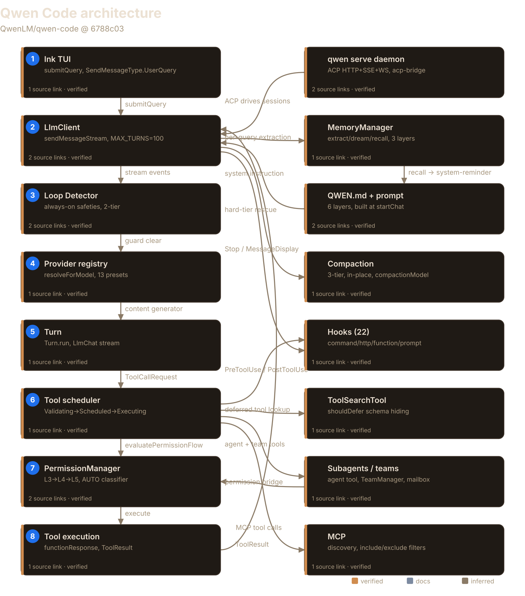
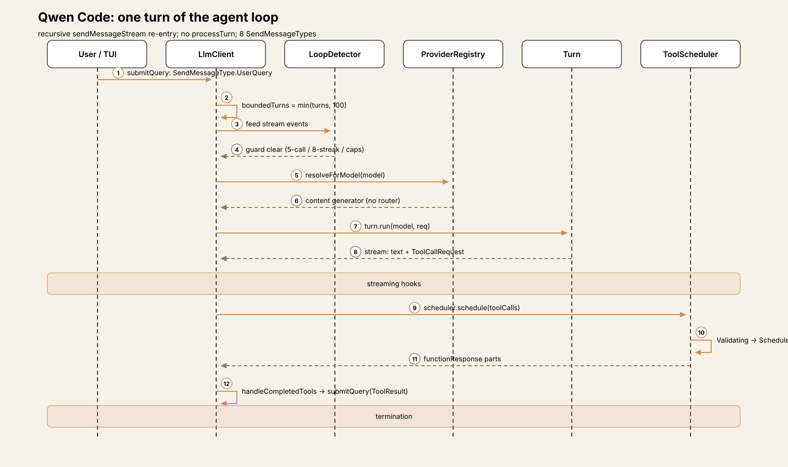
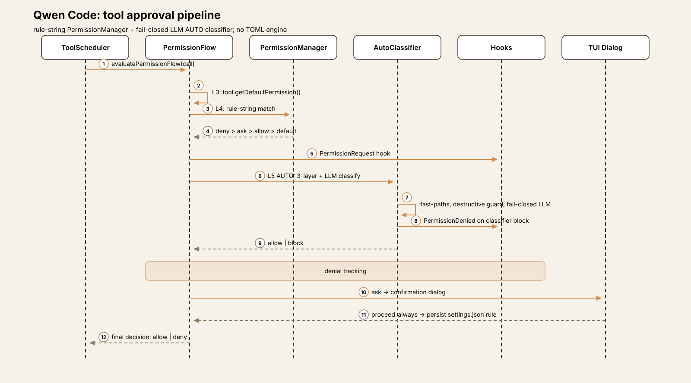
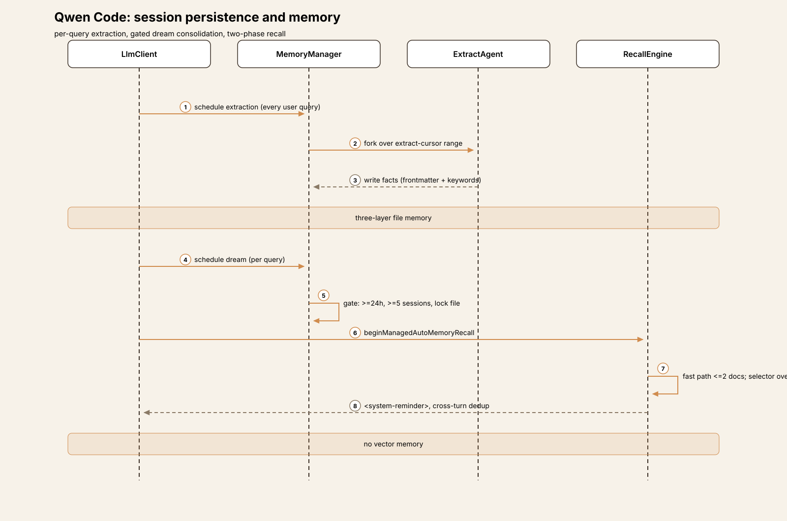
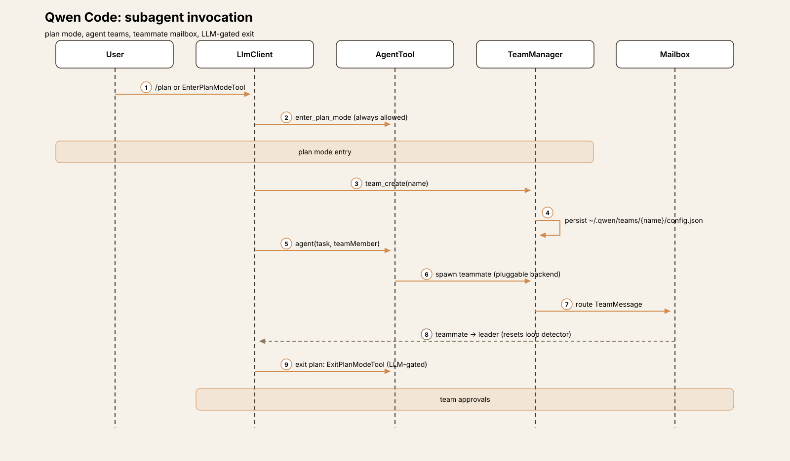
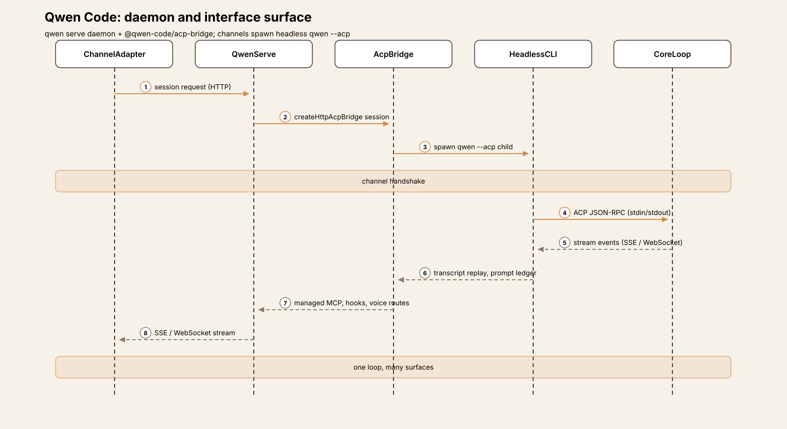

Agent Harness Anatomy #12: Qwen Code — the fork that outgrew its parent
Series: Agent Harness Anatomy — top-down dissections of real agent harnesses, grounded in verifiable source code. Every behavioral claim below carries a footnote to a pinned GitHub permalink; the full evidence lives in the endnotes.
Version block
- Repo: QwenLM/qwen-code
- Pinned: tag
v0.25.0→6788c035698a0ada471c958d1e789e96c6cddd9b(2026-10-05) - Language: TypeScript (pnpm workspaces monorepo)
- License: Apache-2.0
- Claim under test: "An open-source, terminal-first AI agent optimized for Qwen models" (from the repo description)

Explore the interactive architecture diagram 16 nodes, 19 edges — pan, zoom, and follow every subsystem linkThe mental model
Qwen Code is a fork of Gemini CLI v0.8.2 that kept almost nothing of its parent's signature machinery. The README is explicit: "Starting from Qwen Code v0.1, we stopped syncing with upstream and began independent development as a multi-protocol, multi-platform agent framework."1 That fork point predates Gemini CLI's TOML policy engine and its composite model router — so the systems that define Gemini CLI #10 simply never arrived here. Qwen rebuilt the middle from scratch: a rule-string PermissionManager with an LLM-judged AUTO mode in place of the TOML engine, an explicit provider/model registry with per-vendor wire adapters in place of the router, and an interface layer the parent never had — an ACP daemon (qwen serve), messaging channels, a Tauri desktop, an Android shell, voice, and three SDKs.2
The core loop is still recognizably Gemini's — the rename sweep is mechanical (GeminiClient → LlmClient and Llm* type aliases prove it) — but restructured around **recursive async *sendMessageStream re-entry**: there is no processTurn; every continuation yields back into sendMessageStream with a decremented turn budget.3
The governing idea moved from Gemini's delegation to explicitness: no per-turn router (the user picks via /model), no next-speaker auto-nudge (skipped by default), no policy tiers (one quaternary decision: deny > ask > allow > default).4 What Qwen added instead is surface area: ~54 built-in tools versus the parent's 26, a tool-search primitive Gemini never built, 22 hook types on Claude Code's taxonomy, Agent Teams, a per-query memory manager, and a tool-call parsing stack hardened for third-party servers.5
The tradeoff differs from the parent's. Gemini CLI's complexity was vertical — router, scheduler, policy engine, sandbox, Conseca stacked inside one terminal program. Qwen Code's complexity is horizontal: the loop stays thin while the codebase sprawls two to three times wider across providers, runtimes, interfaces, and collaboration machinery.6
Package map
The repo is a pnpm workspaces monorepo. For this article nine areas matter:7
| Area | Role | Scale |
|---|---|---|
packages/core/src/core/ | The loop: LlmClient, Turn, LlmChat, scheduler, permission flow | client.ts (~5,700 lines) |
packages/core/src/providers/ + models/ + qwen/ | Provider registry, model catalog, OAuth, content generators | 13 presets, 6 auth wires |
packages/core/src/permissions/ | PermissionManager, AUTO-mode classifier, destructive-command rules | autoMode.ts, classifier.ts |
packages/core/src/tools/ | ~54 tool classes, registry, ToolSearchTool | one class per file |
packages/core/src/agents/ | Subagents, Agent Teams, workflows, pluggable backends | team/, workflow-*.ts |
packages/core/src/hooks/ | 22 hook event types, 4 hook kinds, skill-registered hooks | hooks/types.ts |
packages/core/src/memory/ | MemoryManager: 3-layer file memory, extraction, dream, recall | manager.ts (~2,500 lines) |
packages/core/src/skills/ + extension/ | Skills, Auto-Skills curator, Claude Code plugin converter | skill-curator.ts |
packages/cli/src/ | Ink TUI, qwen serve daemon, ACP integration, 11 channels via packages/channels/ | run-qwen-serve.ts (~3,600 lines) |
The core loop
The loop lives in LlmClient.sendMessageStream (packages/core/src/core/client.ts:3437). Its shape:8
const MAX_TURNS = 100; // client.ts:207
async *sendMessageStream(request, signal, prompt_id, options, turns = MAX_TURNS, ...) {
const boundedTurns = Math.min(turns, MAX_TURNS);
const turn = new Turn(this.getChat(), prompt_id, goalPermit, ...);
// ... consume turn.run() events, schedule tool calls ...
yield* this.sendMessageStream(nextRequest, signal, prompt_id, options, boundedTurns - 1);
}There is **no processTurn** — a repo-wide grep returns nothing; the old processTurn was absorbed into sendMessageStream itself, and every continuation re-enters it recursively with a decremented budget.9 The request type grew: SendMessageType now has eight values — UserQuery, ToolResult, Steer (mid-turn user input), Retry, Hook, Cron (scheduled prompts), Notification (background agents), TeamMessage (teammate → leader, resetting the loop detector).10
Turn.run (core/turn.ts:714) wraps LlmChat.sendMessageStream and translates wire-stream events into ServerLlm* events, accumulating pendingToolCalls; on a wire retry or model_fallback it clears them before yielding, so replayed attempts can't double-execute.11 The CLI pump collects ToolCallRequest events, hands them to the scheduler, and on completion handleCompletedTools calls submitQuery back into sendMessageStream with SendMessageType.ToolResult — the loop is still split across the package boundary: core streams and decides, the CLI schedules and feeds back.12
Termination comes from seven directions: budget exhaustion (MAX_TURNS), a session turn cap (goal runtime turns excluded), a session-token-limit gate keyed by resolved model-route identity, LoopDetected, API error, user cancel, or natural end — no pending tool calls, the stop-hook chain clear, and the next-speaker check saying user.13 The next-speaker check (a side query with a fixed CHECK_PROMPT and {reasoning, next_speaker} schema) exists but is skipped by default — Gemini CLI's auto-nudge is off here unless enabled.14
Loop detection is two-tier. Always-on safeties fire regardless of the skipLoopDetection setting: 5 consecutive-identical tool calls, an 8-call shell-inspection stagnation streak, and a soft-100/hard-1000 per-turn tool-call cap.15 The opt-in heuristic layer (content/thought repetition, read-file churn, global duplicates, ABAB alternation) is disabled by default — "the documented escape hatch only relaxes the heuristics" — while result-aware guards distinguish productive re-polling from stuck loops for stateful read tools (task_list): repetition counts only when the results are also unchanged.1617
Two newer loop stages sit before the end of a turn. A **Stop hook** fires through the MessageBus when no tool calls are pending, ahead of the next-speaker check; a blocking decision recurses with the hook's continueReason, with chains bounded by a stop-hook blocking cap and a fresh loop-detector budget.18 A **MessageDisplay hook** dispatcher fires repeatedly as the reply streams, with an idempotent finish() awaited on every exit path.19 New in this fork is steer input: options.getSteerInput injects user input mid-turn at a sampling boundary, recursing with SendMessageType.Steer; user text can carry a +500k-style turn-budget directive parsed by core/turn-budget.ts (1,000 to 100,000,000 tokens).20 Model resolution per call is explicit: BaseLlmClient.resolveForModel(model) resolves the content generator from the provider registry — the composite router is gone (no routing/ directory, no router.route references).21

Trace one turn
Trace Summarize the changes in this repo through the interactive CLI:22
- Input. The Ink TUI captures the prompt;
submitQueryenterssendMessageStreamwithSendMessageType.UserQuery.UserPromptSubmithooks fire once perprompt_id.23 - Turn budget.
boundedTurns = Math.min(turns, 100); the session turn cap is checked; the session-token-limit gate is evaluated against the model-route identity.24 - Loop guard. The loop detector is fed one stream event at a time; the always-on safeties (5 identical calls, 8 shell-inspection stagnation, soft-100/hard-1000 caps) can abort here before the model is called.25
- Model resolution. No router:
resolveForModelpicks the content generator for the user's selected model/provider, resolved fresh at request time.26 - Model call.
Turn.run→LlmChat.sendMessageStream→ the wire.MessageDisplayhooks fire as the reply streams. The model emits text plus arun_shell_commandcall (git log --oneline -10).27 - Tool request.
TurnyieldsToolCallRequest; the CLI collects it andscheduler.schedule(...)enqueues it in the core scheduler:ValidatingToolCall→ScheduledToolCall→ExecutingToolCall.28 - Permissions.
evaluatePermissionFlowruns L3 (the tool's intrinsicgetDefaultPermission— shell non-read-only → ask) → L4 (PermissionManagerrule strings, deny > ask > allow > default) → L5 (AUTO mode: three-layer filter + fail-closed LLM classifier; "Always allow" outcomes persist rules intosettings.json).29 - Feedback. The tool executes; output becomes
functionResponseparts.handleCompletedToolscallssubmitQuery(responses, {isContinuation: true})withSendMessageType.ToolResult→ back to step 2 withboundedTurns - 1. When no tool calls are pending, theStop-hook chain runs, then the next-speaker check (skipped by default → turn ends).30

Play the 8-step trace One turn through Qwen Code — input, turn budget, loop guard, model resolution, model call, tool request, permissions, feedbackSubsystem inventory
Tool system. ~54 concrete tool classes in tools/ + tools/agent/ versus 26 in the parent — plus goal, omni media, session-source, image-generation, synthetic structured_output, and workflow tools (~60–70 potential registrations over ~20 feature flags).31 The fork adds cron, plan-mode, worktree, team, and thread tools plus send_message, list_agents, create_sub_session, exec, and tool_search; LS is opt-in and off by default.32 Registration is lazy and mode-gated — Config.registerLazyTool stores dynamic import() factories, and createToolRegistry wires bare/sandbox/container/managed/subagent branches.33 And Qwen built what Gemini CLI never had: **ToolSearchTool** — only a curated core set is declared to the model up front; tools marked shouldDefer=true stay hidden until the model queries by exact select: or fuzzy match, then invokes through a ToolCall bridge without changing the active declaration list.34
Approvals. The fork's signature subsystem, replacing Gemini's TOML policy engine entirely: no PolicyEngine, no policies/*.toml, no Conseca — and the inherited confirmation bus auto-responds confirmed:true with the comment "policy engine removed."35 Five approval modes — plan, default, auto-edit, auto, yolo — with AUTO the default (bare/safe mode and untrusted folders force manual approval); unlike Gemini, YOLO may be set persistently in settings.json.3637 Each tool call runs a shared L3 → L4 → L5 flow: L3, the tool's intrinsic getDefaultPermission(); L4, the PermissionManager rule override; L5, the approval-mode override (YOLO auto-approves everything except ask_user_question; PLAN blocks non-read-only; AUTO_EDIT approves edit/info).38 Decisions are quaternary — allow | ask | deny | default — and rules are strings like "Bash(git *)", "Read(./secrets/**)", "WebFetch(domain:x.com)", with specifier kinds auto-derived from the tool category.39 Evaluation order is deny > ask > allow > default, session rules before persistent ones, restrictive rules following canonical paths so a symlink can't widen an explicit allow.40 Rules come from settings.json permissions.{allow,ask,deny} (≤500 rules, ≤512 chars); "always allow" dialog outcomes write rules back into settings, and a whole-tool deny removes the tool from the registry.41
AUTO mode is the biggest Qwen-specific addition: the default mode lets an LLM classifier decide per call. Three layers fire only when L4 returned 'default' or intrinsic 'ask': an accept-edits fast-path for Edit/Write inside the workspace; a safe-tool allowlist of read-only built-ins (MCP tools and send_message excluded); a deterministic destructive-command guard that runs before the LLM; then the two-stage classifier (max_tokens=32 fast path, 4096 full review).42 The classifier is fail-closed (any error → shouldBlock=true), consuming the transcript tail with assistant text and tool results stripped, plus host-confirmed user answers and hints.allow.43 Protected-write surfaces (.git, package.json, CI workflows, all .qwen/ self-modification, QWEN_HOME, memory files) never take the fast path and force manual fallback outside the workspace; interpreter-led Bash(...) allow rules are stripped while in AUTO; denial tracking (3 consecutive blocks, 2 classifier-unavailable, 20 total) circuit-breaks to manual approval, and classified denials instruct the model not to seek equivalent paths.444546
Sandbox. Two mechanisms. (a) A new Linux-only execution sandbox: shell/payload execution inside bwrap or landlock backends via relay binaries; non-Linux throws "Tool execution sandbox requires Linux." Policy is filesystem: 'read-only' | 'workspace-write', network: 'open' | 'closed', probed at startup, and incompatible with ACP, worktrees, LSP, MCP, and extensions (fatal config error if combined).47 (b) The legacy whole-CLI container sandbox from v0.8.2 (--sandbox with docker/podman/sandbox-exec); --sandbox bwrap is a fatal error redirecting to tools.executionSandbox.48
Model providers. The other full rebuild: six auth wires — openai, openai-responses, qwen-oauth, gemini, vertex-ai, anthropic — dispatch to per-protocol generators (lazy-loaded, plus a logging wrapper), with the openai wire picking among 10 host-sniffed adapters.49 A declarative 13-preset registry declares protocol, baseUrl, env key, models, and discovery per preset; a setup wizard writes an install plan to settings, and discovery-capable providers fetch GET {baseUrl}/models at setup.50 The runtime ModelRegistry is keyed AuthType → compositeKey(id + baseUrl) with a typo guard, per-model wireApi routing, and switchModel with rollback snapshots.51 Auth is Alibaba-centric: the primary Qwen path is an RFC 7636 PKCE device-code flow against chat.qwen.ai (credentials in ~/.qwen/oauth_creds.json), consumed as bearer tokens against DashScope's OpenAI-compatible endpoint; two API-key plans have regional endpoints; generic provider keys round out the set.5253 Deep Qwen-family logic is everywhere: QwenContentGenerator subclasses OpenAIContentGenerator; isQwenFamilyWireModel() gates the DashScope reasoning-knob mapping and a regex modality table (generic qwen* → text-only, fail-closed); a <think> tagged-thinking parser converts inline reasoning to thought: true parts.54 Model knowledge comes from a bundled models.dev projection refreshed in the background (serving the next process), feeding modality defaults and context-window detection; the Qwen OAuth models are hard-coded.5556
Prompt construction. Six ordered layers — base (identity "You are Qwen Code, … developed by Alibaba Group …", overridable via QWEN_SYSTEM_IDENTITY_MD or fully replaced via QWEN_SYSTEM_MD), mediaGuidance, contextFiles (the QWEN.md hierarchy), appendPrompt, gitStatus (once per session), and autoMemory — always last "so a save invalidates the shortest possible cached prompt prefix."57 Built once at startChat, refreshed only on events (memory writes, /cd, output-language changes), not per turn.58 Cache-aware: the stable layers are recorded via setStaticSystemPrefix, and the Anthropic converter splits at that boundary into two cache_control blocks (stable prefix with optional cross-session scope: 'global'; volatile per-session suffix); the OpenAI pipeline has separate prompt_cache_breakpoint markers for DashScope.59 Startup context is a single user message of <system-reminder> parts (MCP instructions, skills snapshot capped at 8000 chars, deferred-tools reminder) ordered stable-first for prefix caching, and re-prepended after auto-compaction.60 Per-turn delivery points unshift memory recall to the front of the reminder block and append a tool_result point after tool responses so functionCall/functionResponse pairs are never split.61
Memory/session. Sessions persist as append-only JSONL — <uuid>.jsonl under ~/.qwen/projects/<cwd>/chats, randomUUID ids, the global dir renamed ~/.gemini → ~/.qwen.62 Compaction is redesigned on claude-code lines: three tiers — warn = auto − 20_000, auto = min(0.85 × window, window − 20_000 − 13_000), hard = window − 3_000 — with a hard-tier rescue forcing in-flight compaction, run in-place (no restart), a dedicated compactionModel setting, and a 3-failure circuit breaker.63 Context files became QWEN.md + AGENTS.md + QWEN.local.md (gitignored per-developer override, excluded from upward search); Gemini's Tier-3 JIT discovery is gone; the write tools are manage_memory + search_memory.6465 Gemini's background extraction service is gone — replaced by **MemoryManager**, a three-layer file memory (project, user ~/.qwen/memories/, team <gitRoot>/.qwen/team-memory/ synced via git): no SQLite, no embeddings — frontmatter-keyword scans plus a model selector.6667 Extraction runs after every user query through a cursor-based forked agent; dream is also scheduled per query but gated (≥24h, ≥5 sessions, different session, lock file); recall is a two-phase prefetch (fast path ≤2 docs + model selector over ≤200 candidates) delivered as <system-reminder> with cross-turn dedup.686970

Hooks. 11 → 22 event types on Claude Code's taxonomy — PreToolUse, PostToolUse, PostToolUseFailure, PostToolBatch, Notification, UserPromptSubmit, UserPromptExpansion, SessionStart, Stop, MessageDisplay, SubagentStart, SubagentStop, PreCompact, PostCompact, SessionEnd, SessionDelete, PermissionRequest, PermissionDenied, StopFailure, TodoCreated/TodoCompleted ("Qwen Code specific"), InstructionsLoaded.71 Hook kinds grew to four — command, http (with an SSRF guard), function, prompt — and sources are Project, User, System, Extensions, plus Session (new): skills can register session-scoped hooks from frontmatter, auto-removed with once: true.7273 Permission hooks get a PermissionRequest decision point before the dialog and a PermissionDenied event on AUTO-mode classifier blocks.74
Subagents and planning. The model-facing subagent tool is renamed **agent** (task survives as a legacy alias).75 Plan Mode is first-class: EnterPlanModeTool (kind Think, always allowed since entering lowers privileges) is "the only door into plan mode in headless/ACP sessions," with YOLO-entry a no-op unless user-requested; the exit is an LLM-gated ExitPlanModeTool.76 Agent Teams are a full subsystem: a TeamManager, persisted TeamFiles at ~/.qwen/teams/{team-name}/config.json, team_create/team_delete tools, a teammate mailbox, a distributed task board, and a leader permission bridge forwarding approvals with badges.77 Around them: checkpointed resumable dynamic workflows, resumable background agents with a notification queue, pluggable agent backends, and a native LSP client plus a model-facing lsp tool.78

Skills. The SKILL.md model survives with dirs renamed to .qwen — .qwen/skills/, .qwen/archived-skills/, and a .qwen/pending-skills/ staging dir beside the skills root so discovery never picks up unconfirmed skills.79 Auto-Skills replaces the background skill-extraction agent: a scheduled curator that auto-generates skills weekly, marks stale after 30 days, archives after 90, and surfaces via /curator.80 extension/ adds converters that import Claude Code plugins.81 MCP is the least-changed extensibility pillar: discovery with includeTools/excludeTools filtering and the --mcpServerCommand injection path carried over.82

Interfaces. The biggest delta of all. qwen serve is a ~3,600-line Express daemon (HTTP+HTTPS, TLS) hosting sessions over ACP on HTTP + SSE + WebSocket serving the web UI and exposing managed MCP, hooks, and voice/session routes.83 The shared protocol core is factored out as **@qwen-code/acp-bridge (~27 modules), which the daemon builds on.84 Eleven channel adapters** (telegram, weixin, dingtalk, wecom, feishu, qqbot, github, gitlab, dws, email, plugin example) spawn headless qwen --acp children via a ChannelAgentBridge with a private-parent capability handshake — channels, Zed, and the web shells all drive the same core loop by speaking ACP to a spawned CLI.85 The rest of the surface: a browser web shell, a Tauri desktop app that starts qwen serve on an ephemeral loopback port with a per-launch bearer token and opens the daemon-served Web Shell in the native window, a VS Code companion extension, a Zed manifest-only stub, a vendored CUA driver for desktop/browser automation, a mobile MCP server, an Android WebView shell, a standalone node-repl MCP server, and browser-use bindings.86 The voice path (native mic → realtime voice control plane → Electron macOS host → daemon voice routes) is present in package structure but its end-to-end flow was not traced.87 Three SDKs ship: TypeScript (@qwen-code/sdk, experimental, query({prompt, options})), Python (qwen-code-sdk, alpha), and Java (Maven multi-module with a managed agent server and runtime broker).88
Failure handling. retryWithBackoff defaults to 7 attempts, 1.5s initial / 30s max delay, jitter, abort-awareness, and stderr heartbeats; an unattended mode (QWEN_CODE_UNATTENDED_RETRY=true) retries transient 429/529 capacity errors indefinitely — backoff capped at 5 min, absolute single-wait cap 6h — and is explicitly not auto-enabled on CI.89 A transport retry allow-list covers ECONNRESET, ETIMEDOUT, and undici socket/body timeouts, plus status-less upstream gateway errors pushed into an already-200 SSE stream; stream watchdogs cover silent and drip-fed never-completing streams, with inactivity errors classified as retryable.90 Retry and model-fallback events clear the turn's accumulated tool calls while the loop-guard feed rolls back streaks and cap-trackers, so a replayed attempt doesn't trip the detector.91 Cross-restart session recovery classifies the persisted tail (clean | interrupted_prompt | interrupted_turn | degraded_history): orphaned user entries re-submit with Retry semantics, and orphaned functionCalls are closed with **synthesized error functionResponses** submitted as a ToolResult — a legal continuation after a crash mid-tool-run.92 Incomplete tool-call args (truncated by the output-token limit) carry a non-enumerable symbol marker kept separate from the user-visible diagnosis, so fixing a finish-reason rewrite can't silently disarm the half-written-call guard; a tool-response finalizer handles boundary diagnostics and persist-and-truncate, and the compaction cheap-gate NOOPs after 3 consecutive failures.9394
What it deliberately omits
- No per-turn model router. The composite strategy chain with sticky sequencing never arrived from the parent; model selection is explicit (
/model,switchModel) and resolved per call. - No TOML policy engine. Gemini's tiered policies are gone; rules are plain strings in
settings.json, and the confirmation bus is aconfirmed:truepassthrough. - No vector memory. Sessions are JSONL, memory is frontmatter markdown — retrieval is keyword scans plus a model selector, not embeddings.
- No non-Linux sandbox. macOS Seatbelt and Windows helpers were removed, not replaced; the execution sandbox throws on other platforms.
- No JIT context discovery. Gemini's Tier-3
discoverContextper-access injection is absent. - No idle-time background extraction. Memory extraction and dream-consolidation run per user query instead of on an idle timer.95
Comparison matrix row
| # | Dimension | Qwen Code (v0.25.0) |
|---|---|---|
| 1 | Agent loop | Recursive sendMessageStream re-entry (no processTurn); MAX_TURNS=100 + session-turn cap + session-token-limit gate; 8 SendMessageTypes; next-speaker check skip-by-default; Stop/MessageDisplay hook stages |
| 2 | Tool system | ~54 built-in classes + goal/omni/workflow tools (≈60–70 potential); lazy mode-gated registration; ToolSearchTool + shouldDefer schema hiding; scheduler lifecycle retained |
| 3 | Model providers | 6-auth-wire dispatch; 13-preset registry + wizard; no per-turn router — explicit /model selection; models.dev bundled/live catalog; 10 host-sniffed OpenAI adapters; deep Qwen-family logic |
| 4 | Prompt construction | 6-layer system prompt (autoMemory last); frozen at startChat; Anthropic two-block cache_control split; <system-reminder> prelude re-prepended after compaction; claude-code 9-section <state_snapshot> |
| 5 | Memory/session | JSONL <uuid>.jsonl under ~/.qwen/projects/<cwd>/chats; 3-tier compaction (warn/auto 0.85/hard); QWEN.md + AGENTS.md + QWEN.local.md; MemoryManager (project/user/team layers), per-query extraction + gated dream; no vector DB |
| 6 | Reasoning/planning | agent tool (task alias); Plan Mode (enter/exit, ACP/headless entry); Agent Teams (mailbox, task board, persisted teams, leader permission bridge); workflow checkpoints; goal runtime; native LSP |
| 7 | Extensibility | MCP (least-changed); 22 hooks in 4 kinds, Claude-Code-convergent; skills register session hooks; Auto-Skills weekly curator; Claude Code plugin converter |
| 8 | Interfaces | Ink TUI; qwen serve ACP daemon (HTTP+SSE+WS) + @qwen-code/acp-bridge; 11 channel adapters spawning headless qwen --acp; web shell; Tauri desktop; VS Code companion; Zed thin stub; voice; Android shell; TS/Python/Java SDKs |
| 9 | Failure handling | retryWithBackoff (7 attempts, 1.5s→30s) + unattended infinite-retry mode; stream-transport allow-list + watchdogs; two-tier loop detector; result-aware guards; cross-restart session recovery with synthetic tool responses |
| 10 | Security model | AUTO default: rule-string PermissionManager (deny>ask>allow>default) + fail-closed LLM classifier + destructive-command guard + protected writes; confirmation bus gutted; Linux-only bwrap/landlock sandbox; YOLO settable in settings.json |
Endnotes
-
README.md:214(fork of Gemini CLI v0.8.2; independent since Qwen Code v0.1; "multi-protocol, multi-platform agent framework"). ↩ -
Rebuilt layers:
packages/core/src/permissions/(rule-stringpermission-manager.ts,autoMode.ts,classifier.ts);packages/core/src/providers/all-providers.ts:54-68(13-preset registry);packages/cli/src/serve/run-qwen-serve.ts(ACP daemon);packages/channels/(11 adapters). ↩ -
packages/core/src/core/client.ts:438(LlmClient);core/turn.ts:173(GeminiErrorEventValue = LlmErrorEventValuealias proves mechanical rename);core/client.ts:3437, 3442(sendMessageStreamasync-generator signature). ↩ -
No
routing/directory and zerorouter.routereferences inpackages/core/src(absence verified by grep);packages/core/src/core/client.ts:4361(BaseLlmClient.resolveForModel);packages/core/src/config/config.ts:3610(skipNextSpeakerCheck ?? true);packages/core/src/permissions/types.ts:12-18(quaternaryPermissionDecision). ↩ -
54 concrete tool classes counted by class grep over
packages/core/src/tools/(+tools/agent/), excluding discovered/mock/base classes;packages/core/src/tools/tool-search.ts:8-20(ToolSearchTool,shouldDefer);packages/core/src/hooks/types.ts:24-69(22HookEventNamemembers);packages/core/src/agents/team/(TeamManager.tsetc.);packages/core/src/memory/manager.ts(~2,500 lines);packages/core/src/openaiContentGenerator/taggedThinkingParser.ts:1-50;packages/core/src/core/xml-tool-call-fallback.ts:10-30. ↩ -
New top-level dirs in
packages/core/src/verified by listing:qwen/,providers/,models/,permissions/,goals/,followup/,omni/,code-mode/,managed-runtime/,confirmation-bus/,ipc/,ide/,lsp/,memory/,telemetry/,skills/,output/,resources/,extension/;scheduler/→ folded intocore/coreToolScheduler.ts,policy/→ per-concern files incore/,routing/→providers/+models/,context/→ dispersed. ↩ -
Package layout and line counts from the pinned tree;
packages/core/src/core/client.tsspans beyond line 5690 (generateContent);packages/core/src/memory/manager.ts~2,500 lines;packages/cli/src/serve/run-qwen-serve.ts~3,600+ lines. ↩ -
packages/core/src/core/client.ts:3437(sendMessageStream);client.ts:207(MAX_TURNS = 100); continuations passboundedTurns - 1(steer:client.ts:~5061; stop-hook:client.ts:~5212/~5313; next-speaker:client.ts:~5428). ↩ -
Grep for
processTurnacrosspackages/core/src/core/returns zero hits (absence verified). ↩ -
packages/core/src/core/client.ts:212-227(SendMessageTypeeight values);TeamMessageresets loop-detector + interaction span. ↩ -
packages/core/src/core/turn.ts:697, 714(Turn.run,pendingToolCallsaccumulation); retry/model_fallback clearing inrun()body (method-level verified). ↩ -
packages/cli/src/ui/hooks/use-llm-stream.ts:283(scheduler.schedule);use-llm-stream.ts:1131(handleCompletedTools);use-llm-stream.ts:3555(submitQuery);live-session.ts:964(second scheduler hand-off). ↩ -
packages/core/src/core/client.ts:207, 4310-4315(max turns,'max turns exhausted');client.ts:~4291(MaxSessionTurns);client.ts:4305-4309(goal turns excluded);client.ts:4350-4405(SessionTokenLimitExceeded, per model-route identity);client.ts:4686-4693(LoopDetected);client.ts:5030-5060(API error);client.ts:5360-5450(natural end: no pending calls, stop-hook chain clear, next-speakeruser). ↩ -
packages/core/src/utils/nextSpeakerChecker.ts:19-29(CHECK_PROMPT);nextSpeakerChecker.ts:31-44({reasoning, next_speaker}schema);nextSpeakerChecker.ts:60-90(short-circuits);packages/core/src/config/config.ts:3610(skipNextSpeakerCheck ?? true, default off). ↩ -
packages/core/src/services/loopDetectionService.ts:71(TOOL_CALL_LOOP_THRESHOLD = 5);loopDetectionService.ts:162(SHELL_COMMAND_STAGNATION_THRESHOLD = 8);loopDetectionService.ts:176-191(soft 100 / hard 1000 caps);packages/core/src/core/client.ts:4876(checkAlwaysOnSafeties, fires before and regardless ofskipLoopDetection);packages/core/src/config/config.ts:1937(validateMaxToolCallsPerTurn). ↩ -
packages/core/src/services/loopDetectionService.ts:141-156(file-read churn 8-in-15, cold-start exemption);:168(global duplicates 6);:172(ABAB 3 cycles);:139(thought repetition 3);packages/core/src/core/client.ts:4903-4918(heuristic layer opt-in,skipLoopDetectiondefault true, "documented escape hatch only relaxes the heuristics"). ↩ -
packages/core/src/services/loopDetectionService.ts:559(recordToolResultByCallId, fed atclient.ts:4674-4701);:131(STATEFUL_READ_TOOLS = {'task_list'});packages/core/src/core/client.ts:4767-4780, 4883-4891(call-id dedup, guard rollback on retry). ↩ -
packages/core/src/core/client.ts:~5095-5360(Stop hook via MessageBus before next-speaker check);client.ts:5180-5360(stopHookBlockingCap,StopHookLoop);client.ts:~5295-5304(fresh loop-detector budget on stop-hook continuations). ↩ -
packages/core/src/core/client.ts:4737-4765, 5021-5028(MessageDisplaydispatcher,is_final, idempotentfinish()on every exit path). ↩ -
packages/core/src/core/client.ts:4320-4355(takeSteerInput);client.ts:5049-5095(steered recursion,SendMessageType.Steer, stop-hook chain cleared);packages/core/src/core/turn-budget.ts:~35, ~42(+500kparsing,MAX_TURN_BUDGET_TOKENS = 100_000_000,MIN_TURN_BUDGET_TOKENS = 1_000). ↩ -
packages/core/src/core/client.ts:4361(resolveForModel);packages/core/src/core/client.ts:4355-4369(\0-suffixed route selector);packages/core/src/config/config.ts:7415(Config.switchModel);packages/core/src/models/modelsConfig.ts:511-546(ModelsConfig.switchModel);config/config.ts:5800-5823(onModelChange→refreshAuth). ↩ -
Trace reconstructed from the code paths cited per step; no live run was performed. ↩
-
packages/core/src/hooks/types.ts:25-68(UserPromptSubmitin the 22-event enum);packages/cli/src/ui/hooks/use-llm-stream.ts:3555(submitQuery→sendMessageStreamwithSendMessageType.UserQuery). ↩ -
packages/core/src/core/client.ts:207, 4310-4315(boundedTurns, max-turns end);client.ts:~4291(session-turn cap);client.ts:4350-4405(session-token-limit gate). ↩ -
packages/core/src/services/loopDetectionService.ts:71, 162, 176-191(always-on thresholds);packages/core/src/core/client.ts:4876-4891(always-on check before model call). ↩ -
packages/core/src/core/client.ts:4361(resolveForModel);packages/core/src/providers/+packages/core/src/models/(registry/catalog); norouting/directory. ↩ -
packages/core/src/core/turn.ts:714(Turn.run);packages/core/src/core/client.ts:4737-4765(MessageDisplayhooks during streaming). ↩ -
packages/cli/src/ui/hooks/use-llm-stream.ts:283(scheduler.schedule);packages/core/src/core/coreToolScheduler.ts:605-717(ValidatingToolCall→ScheduledToolCall→ExecutingToolCall). ↩ -
packages/core/src/core/permissionFlow.ts:64-106(evaluatePermissionFlowL3 → L4);permissionFlow.ts:178-232(L5 overrides: YOLO, AUTO_EDIT, PLAN, AUTO);packages/core/src/permissions/permission-manager.ts:469-489(evaluateSingle, deny > ask > allow > default);packages/core/src/permissions/permission-manager.ts:529-577(compound shell split);permission-manager.ts:358-395(virtual-op escalation-only);packages/core/src/permissions/autoMode.ts:1059-1100(evaluateAutoMode, three-layer + classifier);packages/core/src/permissions/classifier.ts:13-16(fail-closed);packages/core/src/core/coreToolScheduler.ts:3955(ask_user_questionalways confirms);packages/core/src/core/permission-helpers.ts:182-245(persistPermissionOutcome). ↩ -
packages/cli/src/ui/hooks/use-llm-stream.ts:1131(handleCompletedTools);use-llm-stream.ts:3555(submitQuerywithSendMessageType.ToolResult);packages/core/src/core/client.ts:~5095-5360(Stop-hook chain);packages/core/src/config/config.ts:3610(next-speaker skipped by default). ↩ -
54 named tool classes in
packages/core/src/tools/+tools/agent/(class grep, excluding discovered/mock/base);packages/core/src/config/config.ts:12368-12390(goal tools);config.ts:12909-13013(15 omni media tools);config.ts:12341-12363(syntheticstructured_output);config.ts:12715(session-source tool);config.ts:12709(image-generation tool);config.ts:12887(workflow tool); the ≈60–70 figure is a ceiling over ~20 feature flags (INFERRED from branch structure). ↩ -
Gemini-era basics + Qwen additions enumerated from
packages/core/src/config/config.ts:12314-13025(createToolRegistrybranches): cron trio +loop_wakeup;enter/exit_plan_mode;enter/exit_worktree; 7 team tools (agent-team flag); 6 thread tools (workspace-agent sessions);send_message;list_agents;create_sub_session(daemon/ACP only);exec(code-mode only);tool_search; LS opt-in. ↩ -
packages/core/src/config/config.ts:12106(registerLazyTool, dynamicimport()factories);config.ts:12298(createToolRegistry);config.ts:12314-12536(mode branches: bare / shell-sandbox / container / managed / subagent);forSubAgentstrips structured-output, workflow,request_shutdown. ↩ -
packages/core/src/tools/tool-search.ts:8-20(ToolSearchTool,shouldDeferschema hiding, exactselect:+ fuzzy match,ToolCallbridge); registered in standard and execution-environment branches (packages/core/src/config/config.ts:12546-12549,:12462-12465). ↩ -
No
policy/dir, noPolicyEngine, no TOML files, no Conseca, nosafety/dir — all verified by repo-wide grep underpackages/{core,cli}/src(zero hits);packages/core/src/confirmation-bus/message-bus.ts:49-56(TOOL_CONFIRMATION_REQUESTauto-respondsconfirmed:true, "policy engine removed"). ↩ -
packages/core/src/config/approval-mode.ts:7-13(enum:plan | default | auto-edit | auto | yolo);packages/core/src/config/config.ts:3393(approvalMode ?? ApprovalMode.AUTO);packages/cli/src/config/config.ts:1908-1910(CLI falls through to AUTO);packages/cli/src/config/settingsSchema.ts:3230(schema default AUTO);packages/cli/src/config/config.ts:1905-1923(bare/safe → DEFAULT; untrusted folder forces DEFAULT). ↩ -
packages/cli/src/config/settingsSchema.ts:3224-3243(YOLO as a plain settings option; no yolo-restriction error found);packages/cli/src/config/approval-mode-value.ts:29-34(auto_edit/autoeditaliases);packages/cli/src/config/top-level-options.ts:243-255(--yolo/--approval-modeflags);packages/cli/src/config/config.ts:782-783(--yolo+--approval-modeis fatal). ↩ -
packages/core/src/core/permissionFlow.ts:64-106(evaluatePermissionFlow);permissionFlow.ts:178-232(needsConfirmation/isPlanModeBlocked/isAutoEditApproved);packages/core/src/tools/enterPlanMode.ts:81-83(enter_plan_modeL3 → allow);packages/core/src/core/permission-helpers.ts:128-148(PM skipped when L3 denied);packages/core/src/core/coreToolScheduler.ts:3549-3559(fixed_policyskips interactive flow);coreToolScheduler.ts:4293-4316(background agents auto-deny);coreToolScheduler.ts:4095-4125(non-interactive denies outright). ↩ -
packages/core/src/permissions/types.ts:12-18(PermissionDecision);types.ts:30-46, 54-64(rule-string forms and examples);types.ts:48-72(specifier kinds: command/path/domain/literal,key:valuematchers). ↩ -
packages/core/src/permissions/permission-manager.ts:469-489(evaluateSingle; deny > ask > allow > default; session rules before persistent);permission-manager.ts:469-474(restrictive rules canonical, allow rules lexical). ↩ -
packages/cli/src/config/permission-settings.ts:54-72(readPermissionRuleSet);permission-settings.ts:14-15(≤500 rules, ≤512 chars);permissions/permission-manager.ts:236-246(settings merge);permission-manager.ts:238-256(coreTools/allowedTools/excludeToolsfolded into rules);packages/core/src/tools/tools.ts:1274-1291(ToolConfirmationOutcome:proceed_always,proceed_always_project,proceed_always_user,proceed_once_and_switch_to_default, …);packages/core/src/core/permission-helpers.ts:182-245(persistPermissionOutcome);permission-manager.ts:740-827(getToolRegistrationStatus: whole-tool deny → not registered;eagerallowlist demotes to deferred). ↩ -
packages/core/src/permissions/autoMode.ts:1059-1100(evaluateAutoMode; fires only when L4 ='default'or intrinsic'ask'; skipped under explicit user ask rule);autoMode.ts:784-808(L5.1 accept-edits fast-path);autoMode.ts:56-120(L5.2SAFE_TOOL_ALLOWLIST; MCP andsend_messageexcluded);autoMode.ts:1102-1126(L5.2.5 deterministic destructive-command guard);packages/core/src/permissions/destructive-commands.ts(guard rules). ↩ -
packages/core/src/permissions/classifier.ts:7-16(stage 1:max_tokens=32, thinking off, ~300ms,STAGE1_TIMEOUT_MS=10_000; stage 2:max_tokens=4096,STAGE2_TIMEOUT_MS=30_000);classifier.ts:13-16(fail-closed: API error/timeout/schema failure →shouldBlock=true);permissions/classifier-transcript.ts(transcript-tail stripping);permissions/trusted-user-answers.ts;packages/core/src/config/config.ts:641-643(hints.allow). ↩ -
packages/core/src/permissions/autoMode.ts:122-199(protected-write patterns +isAutoModeProtectedWritePath, realpath resolution);autoMode.ts:256-290(classifierallowon protected write → review);autoMode.ts:1128-1150(external_write/external_directorymanual fallbacks). ↩ -
packages/core/src/permissions/dangerousRules.ts:24-75(55-token interpreter/shell/package-runner/remote-shell list);packages/core/src/permissions/permission-manager.ts:198-207(strippedAllowRules: stripped on AUTO entry, restored on exit,settings.jsonuntouched). ↩ -
packages/core/src/permissions/denialTracking.ts:41-46(AUTO_MODE_DENIAL_LIMITS: 3 consecutive blocks, 2 classifier-unavailable, 20 total → manual);packages/core/src/permissions/autoMode.ts:688-694(AUTO_MODE_DENIAL_GUIDANCE);packages/core/src/core/coreToolScheduler.ts:3867-3888(firePermissionDeniedEvent). ↩ -
packages/core/src/sandbox/sandbox-execution.ts:32, 66-76(sandboxBwrapRelay.js/sandboxLandlockRelay.js/sandboxFileWorker.js);sandbox-execution.ts:127-128("Tool execution sandbox requires Linux.");sandbox-execution.ts:34-48(filesystem/network policy, backends);packages/core/src/sandbox/runtime-shell-policy.ts:100-126(admission checks);packages/cli/src/config/execution-sandbox-settings.ts:18-60(tools.executionSandboxstrict schema);packages/core/src/sandbox/runtime-shell-policy.ts:143-170(startup probe, bwrap first/landlock fallback);packages/cli/src/config/config.ts:1736-1754(fatal with ACP/worktrees/LSP/MCP/extensions). ↩ -
packages/cli/src/config/sandboxConfig.ts:24-36, 128-143(legacy--sandbox:docker,podman,sandbox-exec);packages/cli/src/config/execution-sandbox-settings.ts:29-32+packages/cli/src/config/config.ts:639-640(--sandbox bwrapfatal, redirect totools.executionSandbox). ↩ -
packages/core/src/utils/auth-type.ts:8-15(sixAuthTypevalues);packages/core/src/core/contentGenerator.ts:530-596(createContentGeneratordispatch);contentGenerator.ts:468-528(LazyContentGenerator+LoggingContentGenerator);packages/core/src/core/openaiContentGenerator/index.ts:62+(10 host-sniffedOpenAICompatibleProvideradapters). ↩ -
packages/core/src/providers/all-providers.ts:54-68(13 presets,alibabavsthird-partyuiGroup);packages/core/src/providers/types.ts:42-135(ProviderConfig);packages/core/src/providers/provider-config.ts:317(buildInstallPlan);packages/core/src/providers/install.ts:167(applyProviderInstallPlan);packages/core/src/providers/model-discovery.ts:89-132(GET {baseUrl}/models, 5s timeout, 1MB cap, sanitized ids);packages/core/src/providers/presets/alibaba-standard.ts:10-38(4 regional DashScope hosts),:41-80(Qwen models,reasoning.toggleOnly, 1M context). ↩ -
packages/core/src/models/modelRegistry.ts:177(AuthType → compositeKey(id + baseUrl));modelRegistry.ts:45-82(typo guard on unknown provider ids);modelRegistry.ts:84-108(resolveModelProtocol, per-modelwireApi);packages/core/src/models/modelsConfig.ts:558-586(switchModelwith rollback snapshots);packages/cli/src/ui/commands/authCommand.ts:16-40(/authdialog). ↩ -
packages/core/src/qwen/qwenOAuth2.ts:32-42(device-code endpoints, client idf0304373b74a44d2b584a3fb70ca9e56, scopeopenid profile email model.completion);qwenOAuth2.ts:866-940(PKCE pair → device authorization → browser atverification_uri_complete→ poll every 2s);qwenOAuth2.ts:41,1256+packages/cli/src/config/storage-paths-lite.ts:12,157-168(~/.qwen/oauth_creds.json);packages/core/src/qwen/qwenContentGenerator.ts:57-135(DashScope compatible-mode endpoint, dynamicresource_url, 401/403 refresh with one retry);packages/core/src/core/contentGenerator.ts:326(QWEN_OAUTHbypasses API-key validation);packages/core/src/qwen/sharedTokenManager.ts(token pairing + refresh). ↩ -
packages/core/src/providers/presets/alibaba-coding-plan.ts:14-18(BAILIAN_CODING_PLAN_API_KEY, China vs intl endpoints);packages/core/src/providers/presets/alibaba-token-plan.ts:14-18(BAILIAN_TOKEN_PLAN_API_KEY, Beijing vs Singapore endpoints);packages/cli/src/commands/auth.ts:18-40(oldqwen authremoved → migration notice);packages/cli/src/config/auth.ts:24-29(DEFAULT_ENV_KEYSfor generic providers). ↩ -
packages/core/src/core/modalityDefaults.ts:143-150(isQwenFamilyWireModel: qwen* ids +coder-model);packages/core/src/core/openaiContentGenerator/provider/dashscope.ts:57-100(selectDashScopeThinkingKnob: low/medium/high/xhigh/max →enable_thinking/reasoning_effort/thinking_budget, extra_body > samplingParams > reasoning);packages/core/src/core/modalityDefaults.ts:29-100(MODALITY_PATTERNSregex table; genericqwen*→ text-only fail-closed);packages/core/src/core/openaiContentGenerator/taggedThinkingParser.ts:1-50(<think>/<thinking>→thought: true);packages/core/src/core/openaiContentGenerator/prefix-caching.ts:19-61(DashScopeprompt_cache_breakpoint);packages/core/src/core/contentGenerator.tsdocstring (enableRequestMetadataauto-enabled only for qwen-family; DashScope gateway 400s otherwise, issue #11590). ↩ -
packages/core/src/models/model-catalog.ts:12(bundledmodels/generated/model-registry.json);packages/core/src/config/config.ts:4076(refreshModelCatalog()at Config init);packages/core/src/models/model-catalog-refresh.ts:385-405(download serves the next process);model-catalog.ts:36-41(kill switchesQWEN_CODE_MODELS_DEV=off,QWEN_CODE_MODELS_DEV_REFRESH=off; mirror viaQWEN_CODE_MODELS_DEV_URL);model-catalog.ts:59-61(~/.qwen/model-registry.jsoncache);packages/core/src/core/tokenLimits.ts(lookupModelCatalog→ context-window detection);packages/core/src/models/constants.ts(AUTH_ENV_MAPPINGS). ↩ -
packages/core/src/models/constants.ts:108-115(QWEN_OAUTH_MODELS, hard-coded, non-overridable);packages/core/src/utils/default-qwen-model.ts:12(DEFAULT_QWEN_MODEL = 'coder-model');packages/core/src/config/models.ts(MAINLINE_CODER_MODEL = 'qwen3.7-max'). ↩ -
packages/core/src/core/prompts.ts:720-863(getCoreSystemPrompt);prompts.ts:803-870(sixSystemPromptLayers: base → mediaGuidance → contextFiles → appendPrompt → gitStatus → autoMemory);prompts.ts:106("You are Qwen Code, … developed by Alibaba Group …");prompts.ts:110-140, 730-757(QWEN_SYSTEM_IDENTITY_MD,QWEN_SYSTEM_MD);prompts.ts:799-801(autoMemory always last, minimal cache-prefix invalidation);packages/core/src/core/client.ts:1967-1976(gitStatus computed once per session). ↩ -
packages/core/src/core/client.ts:2752-2757(built once atstartChat);client.ts:2091-2096(refreshSystemInstruction);packages/core/src/tools/manage-memory.ts:69-87(refresh on memory writes);packages/core/src/core/llm-chat.ts:2934(chat.setSystemInstruction). ↩ -
packages/core/src/core/client.ts:1995-2006(setStaticSystemPrefix);packages/core/src/core/anthropicContentGenerator/converter.ts:1058-1138(twocache_controlblocks: stable prefix with optionalscope: 'global', volatile suffixephemeral). ↩ -
packages/core/src/core/environmentContext.ts:568-615(getInitialChatHistory: single user message of<system-reminder>parts — MCP instructions, skills snapshot, deferred-tools reminder);environmentContext.ts:32(8000-char skills cap);environmentContext.ts:594-597(stable-first ordering for prefix cache);packages/core/src/core/client.ts:2060-2083(restoreStartupContextAfterCompaction). ↩ -
packages/core/src/core/client.ts:4555+(per-send system reminders);client.ts:4564-4573(tool_resultdelivery point appended after tool responses, never splitting functionCall/functionResponse pairs);client.ts:1368-1415(memory-recall delivery unshifted to front of reminder block). ↩ -
packages/core/src/services/chatRecordingService.ts:1322-1326(<sessionId>.jsonlin<projectDir>/chats);packages/core/src/config/config.ts:3285(randomUUIDsession id);packages/core/src/config/storage.ts:193-203(~/.qwen,QWEN_HOMEoverride);storage.ts:619-623(projects/<sanitizedCwd>);storage.ts:625-630(legacytmp/<projectHash>retained). ↩ -
packages/core/src/services/chatCompressionService.ts:109(DEFAULT_PCT = 0.85);chatCompressionService.ts:113-136(warn = auto − 20_000,auto = min(0.85 × window, window − 20_000 − 13_000),hard = window − 3_000, "match claude-code's" buffers);chatCompressionService.ts:210-246(computeThresholds);chatCompressionService.ts:141-148(MAX_CONSECUTIVE_FAILURES = 3);packages/core/src/core/llm-chat.ts:3107-3132(hard-tier in-flight rescue);packages/core/src/config/config.ts:6878-6902(compactionModelsetting, fallback to main model);chatCompressionService.ts:752-770(streamed, thinking disabled);chatCompressionService.ts:680-706, 748(output budget clamped);services/microcompaction/microcompact.js(wired inllm-chat.ts);services/compactionInputSlimming.ts. ↩ -
packages/core/src/utils/memory-constants.ts:11-33(QWEN.md,AGENTS.md,QWEN.local.md; QWEN.md first;QWEN.local.mdgitignored at<projectRoot>/.qwen/, excluded from upward search);memory-constants.ts:92-99(setGeminiMdFilenamedeprecated alias);packages/core/src/config/config.ts:5308-5330(refreshHierarchicalMemory→loadServerHierarchicalMemory→userMemoryas the contextFiles layer). ↩ -
No
discoverContextmatches anywhere in the codebase (absence verified by grep);packages/core/src/tools/manage-memory.ts:54-57(manage_memory, structured mode only);packages/core/src/tools/search-memory.ts:383(search_memory). ↩ -
packages/core/src/memory/manager.ts(~2,500 lines);packages/core/src/memory/paths.ts:116(project layer root),:287(~/.qwen/memories/user layer),:327(<gitRoot>/.qwen/team-memory/team layer, git-synced); no SQLite/embeddings — retrieval is frontmatter-keyword scans + model selector. ↩ -
packages/core/src/memory/prompt.ts:30-44(frontmatter schema: name, description, type, category, 2–6 keywords, 1–3 usage scenarios, ≤~1200 chars, one fact per file);prompt.ts:16-22(MEMORY.mdindex capped at 200 lines / 25,000 bytes). ↩ -
packages/core/src/core/client.ts:3146(extraction scheduled after every user query);packages/core/src/memory/extract.ts:129-200(forked extraction agent);extract-cursor.jsoncursor (processedOffset);packages/core/src/memory/manager.ts:1098-1125(skipped when main agent wrote memory itself:'memory_tool'). ↩ -
packages/core/src/core/client.ts:3163(dream scheduled per query);packages/core/src/memory/manager.ts:294(DEFAULT_AUTO_DREAM_MIN_HOURS = 24);manager.ts:1494-1595(≥5 sessions gate, different session, lock file, skipped under memory pressure or pending migration);packages/core/src/memory/dream.ts:36-60,memory/dream-operations.ts(create/update/delete/dedupe/split + keyword backfill). ↩ -
packages/core/src/core/client.ts:1368-1415(beginManagedAutoMemoryRecall, two-phase prefetch per user query);packages/core/src/memory/recall.ts:37-42(MAX_FAST_RECALL_DOCS = 2, ≤200 candidates, ≤5 docs, ≤1200 chars each);packages/core/src/core/client.ts:1466-1710(delivery as<system-reminder>atinitial/tool_resultpoints, cross-turn dedup viasurfacedRelevantAutoMemoryPaths). ↩ -
packages/core/src/hooks/types.ts:24-69(22HookEventNamemembers: PreToolUse, PostToolUse, PostToolUseFailure, PostToolBatch, Notification, UserPromptSubmit, UserPromptExpansion, SessionStart, Stop, MessageDisplay, SubagentStart, SubagentStop, PreCompact, PostCompact, SessionEnd, SessionDelete, PermissionRequest, PermissionDenied, StopFailure, TodoCreated, TodoCompleted, InstructionsLoaded). ↩ -
packages/core/src/hooks/types.ts(HookType:command | http | function | prompt);packages/core/src/hooks/httpHookRunner.ts(remote webhook hooks);packages/core/src/hooks/ssrfGuard.ts,hooks/urlValidator.ts(SSRF guard). ↩ -
packages/core/src/hooks/types.ts:13-19(HooksConfigSource: Project, User, System, Extensions, Session);packages/core/src/hooks/registerSkillHooks.ts:7-12(skill-frontmatter hooks registered as session-scoped),:17-40(HttpHookConfig,once: trueauto-removal). ↩ -
packages/core/src/core/coreToolScheduler.ts:4132-4164, 4244-4300(PermissionRequesthook decision point before the dialog);coreToolScheduler.ts:3867-3888(firePermissionDeniedEvent);packages/core/src/core/tool-invocation-guard.ts,core/tool-hook-context.ts,core/toolHookTriggers.ts(hook context at invocation). ↩ -
packages/core/src/tools/tool-names.ts:33(ToolNames.AGENT: 'agent');tool-names.ts:204(tasklegacy alias);packages/core/src/tools/agent/agent.ts:767(AgentTool);tool-names.ts:854(TEAM_AGENT_NAME_PROPERTY, injected when team mode is active atagent.ts:1037);packages/core/src/tools/agent/fork-subagent.ts,fork-profile.ts(child-session model). ↩ -
packages/core/src/tools/enterPlanMode.ts:194(EnterPlanModeTool);enterPlanMode.ts:62-80(always allowed — entering lowers privileges);enterPlanMode.ts:82-88(isPlanLifecycleToolUnavailableInSubagent);enterPlanMode.ts:89-105(YOLO-entry no-op unlessuserRequested; "the only door into plan mode in headless/ACP sessions"; issue #5970);packages/core/src/tools/exitPlanMode.ts:441(ExitPlanModeTool);exitPlanMode.ts:99(PLAN_EXIT_APPROVED_LLM_CONTENT_PREFIXES);packages/core/src/core/plan-mode-entry-policy.ts,core/plan-mode-shell-policy.ts. ↩ -
packages/core/src/agents/team/TeamManager.ts:9-18("central orchestrator for agent teams… Follows the ArenaManager pattern");packages/core/src/agents/team/types.ts:22-52(TeamFileat~/.qwen/teams/{team-name}/config.json:leadAgentId,leadSessionId,leadPid,members,teamAllowedPaths);packages/core/src/tools/team-create.ts,tools/team-delete.ts;packages/core/src/agents/team/mailbox.ts,board-tasks.ts,board-lock.ts;packages/core/src/agents/team/leaderPermissionBridge.ts(wrapConfirmWithBadge). ↩ -
packages/core/src/agents/workflow-checkpoint.ts,workflow-resume-call.ts,workflow-snapshot.ts,workflow-run-registry.ts,workflow-result-format.ts(checkpointed resumable dynamic workflows);packages/core/src/agents/background-tasks.ts,background-agent-resume.ts,background-notification-queue.ts;packages/core/src/agents/background-agent-resume.ts:1911, 1927, 1939(SubagentStarthook, non-fatal);packages/core/src/agents/backends/types.ts(Backend,AgentSpawnConfig,TeamAgentHandle);packages/core/src/agents/worktree-pin.ts,agents/workspace-agents/;packages/core/src/lsp/(native-lsp-service.ts,lsp-server-manager.ts,NativeLspClient.ts);packages/core/src/tools/lsp.ts. ↩ -
packages/core/src/skills/skill-paths.ts:10-22(.qwen/skills/,.qwen/archived-skills/,.qwen/pending-skills/);skill-paths.ts:23-27(pending dir is a sibling soloadSkillsFromDirnever discovers unconfirmed skills). ↩ -
packages/core/src/skills/skill-curator.ts:20(AUTO_SKILL_CURATOR_INTERVAL_MS= 7 days);:21-22(stale after 30d, archive after 90d);:34(prefixauto-skill-);:35-37(skill-curator.json+ file lock);packages/core/src/config/config.ts:4486(maybeRunAutoSkillCuratorat config init);packages/core/src/tools/skill.ts:25(recordAutoSkillUsage);packages/cli/src/ui/commands/curator-command.ts(/curatorcommand). ↩ -
packages/core/src/extension/claude-converter.ts(imports Claude Code plugins);packages/core/src/extension/extension-converter.ts,extension/agent-plugins-v1/,extension/extension-git-client.ts. ↩ -
packages/core/src/mcp/retained;packages/core/src/tools/mcp-client.ts:676, 736(includeTools/excludeTools);mcp-client.ts:1371(--mcpServerCommandinjection);packages/cli/src/serve/managed-mcp-routes.ts,managed-mcp-runtime.ts,client-mcp-sender-registry.ts,client-mcp-ws.ts(MCP exposed through the daemon). ↩ -
packages/cli/src/serve/run-qwen-serve.ts(~3,600+ lines; importsexpress,node:http,node:httpsat:16-28; TLSX509Certificateat:11);packages/cli/src/serve/acp-http/(dispatch.tsAcpDispatcher,sse-stream.ts,ws-stream.ts,json-rpc.ts,connection-registry.ts,workspace-qualified-acp.ts);packages/cli/src/serve/routes/,server/(health/status),serve/auth/,serve/local-control/,serve/voice/,serve/live/,serve/web-shell-preauth.ts,web-shell-static.ts. ↩ -
packages/acp-bridge/src/index.tsre-exports ~27 modules (createHttpAcpBridgefactory,BridgeClient,defaultSpawnChannelFactory,eventBus,bridge,permissionMediator,compactionEngine,transcript-replay,prompt-ledger,sessionArtifacts,sessionAttachments,ndJsonStream,process-registry,daemon-memory-budget,child-heap-policy);run-qwen-serve.ts:45-54imports bridge primitives (eventBus,sessionRestoreTimeout,replayWindowLimits,channelControlTimeouts). ↩ -
packages/channels/(11 adapters +base: telegram, weixin, dingtalk, wecom, feishu, qqbot, github, gitlab, dws, email, plugin-example);packages/channels/base/src/ChannelAgentBridge.ts(ACP_PRIVATE_PARENT_CAPABILITY_META_KEY,QWEN_CODE_PRIVATE_ACP_CAPABILITY, ~lines 35–50);packages/cli/src/cli.ts:594(--acp/--experimental-acpflag);packages/zed-extension/extension.toml(manifest only; Zed downloads@qwen-code/qwen-code-0.10.0.tgzand runsnode ./package/cli.js --acp). ↩ -
packages/web-shell/client/App.tsx(browser daemon-session terminal UI; README Chinese-language);packages/desktop/src-tauri/(Tauri 2: startsqwen serveon an ephemeral loopback port with a per-launch bearer token, waits for/health, opens the daemon-served Web Shell — README);packages/vscode-ide-companion/src/extension.ts(VS Code extension: diff management, IDE server);packages/cua-driver/(vendoredcua-driver-rs-v0.20.0, native desktop/browser automation);packages/mobile-mcp,packages/mobile-shell/app/(Android WebView shell);packages/node-repl,packages/browser-use(Chrome bridge);packages/live-host(Electron macOS audio/shortcut host),packages/qwen-live(realtime voice control plane),packages/audio-capture(native mic,binding.gyp). ↩ -
Voice path (audio-capture → qwen-live → live-host → daemon
serve/voice/+serve/live/) is INFERRED from package descriptions and directory names; not traced end-to-end. ↩ -
@qwen-code/sdk0.1.17 ("Minimum experimental TypeScript SDK",query({prompt, options})insrc/query/);qwen-code-sdk0.1.0 (Python, hatchlingpyproject.toml, "Development Status :: 3 - Alpha"); sdk-java (Maven multi-module:client/,qwencode/,managed-agent-server/,runtime-broker/, each withpom.xml). ↩ -
packages/core/src/utils/retry.ts:259(retryWithBackoff);retry.ts:99-102(defaults:maxAttempts7,initialDelayMs1500,maxDelayMs30000);retry.ts:203-256(jitter, abort-aware, heartbeat callbacks);retry.ts:157-161(QWEN_CODE_UNATTENDED_RETRY);retry.ts:28-30(PERSISTENT_MAX_BACKOFF_MS5 min,PERSISTENT_CAP_MS6 h, heartbeat 30 s);retry.ts:152-156(not auto-enabled on CI). ↩ -
packages/core/src/core/stream-transport-retry.ts:12-19(retryable:ECONNRESET,ETIMEDOUT,UND_ERR_BODY_TIMEOUT,UND_ERR_CONNECT_TIMEOUT,UND_ERR_HEADERS_TIMEOUT,UND_ERR_SOCKET);:12-56(upstream-error-without-statuspredicate);packages/core/src/core/stream-guards.ts:9-40(silent/drip-fed stream watchdogs;QWEN_STREAM_IDLE_TIMEOUT_MS_ENV,QWEN_STREAM_MAX_LIFETIME_MS_ENV;StreamInactivityTimeoutErrorwithcode: 'ETIMEDOUT'). ↩ -
packages/core/src/core/llm-chat.ts:560(model_fallbackevent,LlmEventType.MODEL_FALLBACK);packages/core/src/core/turn.ts(run()clears accumulated tool calls/citations/finish reason);packages/core/src/core/client.ts:4883-4902(loop-guard rollback on retry:loopGuardFedCallIds.clear(), streak/cap-tracker rollback). ↩ -
packages/core/src/core/session-recovery.ts:12-28(clean | interrupted_prompt | interrupted_turn | degraded_history);packages/core/src/core/turn-interruption.ts:9-30(orphaned user entries re-submitted with Retry semantics; orphanedfunctionCalls closed with synthesized errorfunctionResponses as ToolResult; works across restarts from persisted history). ↩ -
packages/core/src/core/incomplete-tool-call-args.ts:8-30(non-enumerable symbol marker for args truncated by the output-token limit; separate from the user-visible diagnosis, issue #12970). ↩ -
packages/core/src/tools/tool-response-finalizer.ts:1-16(boundary diagnostics, persist-and-truncate);packages/core/src/core/llm-chat.ts:89, 2246, 2821-2824(compaction cheap-gate NOOPs afterMAX_CONSECUTIVE_FAILURES= 3). ↩ -
No per-turn model router (no
routing/); no TOML policy engine (confirmation-bus/message-bus.ts:49-56); no vector memory (packages/core/src/memory/file-based + keyword scans); no macOS/Windows sandbox (packages/core/src/sandbox/Linux-only); no JITdiscoverContext; memory extraction/dream per user query (packages/core/src/core/client.ts:3146, 3163) instead of an idle-timer service. ↩